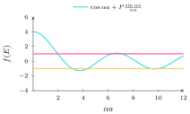

the eigenstates are with periodic,
the eigenstates are with periodic, ![\((-\pi/a,\pi/a]\)](m/88f8e5c5d69fd74ae82390a500d1382660c5520c.svg) ; allowed energies form bands
; allowed energies form bands  separated by gaps that open where Bragg reflection occurs.
separated by gaps that open where Bragg reflection occurs.Theorem and proof
The translation commutes with  (symmetry), so common eigenstates exist with , (bounded states; or periodic boundary conditions over
(symmetry), so common eigenstates exist with , (bounded states; or periodic boundary conditions over  cells, ): , . Then is periodic.
cells, ): , . Then is periodic.  is the crystal momentum, conserved modulo , .
is the crystal momentum, conserved modulo , .
Kronig–Penney model
Square wells (width  ) and barriers (
) and barriers ( , width
, width  ), (Kronig and Penney 1931). Matching as in tunnelling with the Bloch condition gives (for
), (Kronig and Penney 1931). Matching as in tunnelling with the Bloch condition gives (for  ) (Bloch 1929)
) (Bloch 1929)
 : band gaps.
: band gaps.
Picture

 and are allowed bands, the others gaps.
and are allowed bands, the others gaps.
Delta-barrier limit with : bands are where the curve lies between  .
.
Nearly free and tight binding
Weak  : free parabola folded into the zone, gaps at (degenerate perturbation theory between and ). Strong (atomic orbitals, hopping
: free parabola folded into the zone, gaps at (degenerate perturbation theory between and ). Strong (atomic orbitals, hopping  ): , bandwidth — the band is broad when neighbours overlap strongly.
): , bandwidth — the band is broad when neighbours overlap strongly.
Filling and classification
Each band holds electrons (spin). Full bands carry no current. Partially filled → metal; full with gap → insulator; eV → semiconductor (thermally and optically excitable carriers).
Worked example
1D tight-binding chain, nm, eV: bandwidth 4 eV; near  , , effective mass — strong overlap gives light carriers (effective mass).
, , effective mass — strong overlap gives light carriers (effective mass).
Engineering applications
Band engineering of semiconductors and alloys, superlattices and quantum-cascade lasers, Bloch oscillations, photonic crystals (same theorem for light), phononic crystals.
Pitfall
is not the electron's real momentum: is not a momentum eigenstate, and crystal momentum is conserved only up to reciprocal-lattice vectors (Umklapp).